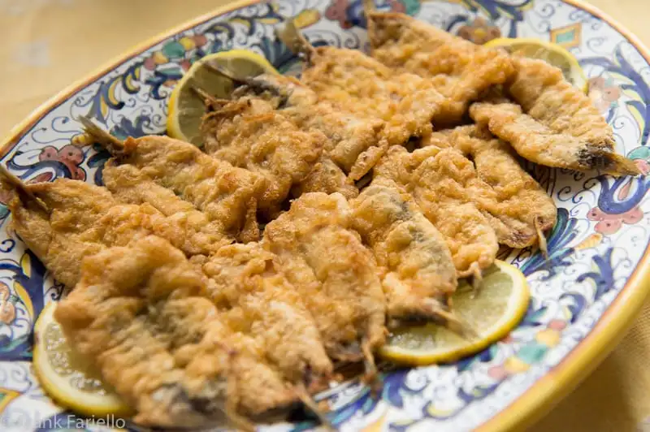

Fried Fresh Anchovies

Fried Fresh Anchovies Neapolitan Style
When they think of anchovies, most people, at least here in the US, think of salt-cured
anchovy fillets packed in oil. If you’re a bit more au fait with Italian cookery, you
may even know about anchovies sotto sale, or packed in salt. You may also know cured
anchovies are a fantastic way to add some intense umami to your cooking, whether or not
you’re cooking seafood. But did you know that fresh anchovies are a thing in Italian
cooking, and that they make for some excellent eating? They can be hard to find (see
Notes below), but fresh anchovies are well worth seeking out.
In this Neapolitan recipe, fresh anchovies are cleaned and simply battered by dipping
them in flour and then in egg, and then quickly fried in olive oil until golden brown
on each side. It’s a method very much like the one for making Angelina’s fried
vegetables, but being a fish dish, without the grated cheese often added to the egg.
The only slightly tricky part of this simple dish is cleaning the anchovies, so we’ve
given you step-by-step illustrations to show you the way. It can be a bit awkward at
first, as whole anchovies are small and slippery, but with a little practice, you’ll
be churning them out in no time.
Ingredients
- 1 kilo (2 lbs) fresh anchovies
- White flour, q.b.
- 4-6 eggs, beaten and seasoned with salt and pepper
- Olive oil
- Salt and pepper
- Lemon wedges or slices
Steps
-
If you’re fresh anchovies are frozen, let them thaw out completely. This can be
done fairly quickly by immersing them in tepid water. Drain them entirely.
-
Now take an anchovy and slit it horizontally down the belly.
-
Cut of the head, then with your fingers, gently open the two
sides of the fish up to expose little 'vein' (actually the viscera) and backbone.
-
Scrap out the vein, then with the help of your paring knife, very gingerly detach
the backbone from the fish, slipping the knife under the bone to detach it, then
using it to hold down the fillets while you lift the bone away from the fillets
with your fingers, taking care to avoid separating the two fillets from each other.
(If they do separate, it’s no real problem, but it will be a bit less pretty.)
-
Stop when you get to the tail. Cut the backbone off just below the tail, keeping
the tail attached to the two fillets.
-
You can rinse the fillet off so it’s perfectly clean if you like, then pat them dry.
Keep going until you’ve cleaned all your fillets.
-
Lay out the flour and seasoned egg in separate bowls and pour enough oil in a skillet
to come up about 2cm (3/4 inch) or so up the sides. Heat the oil until it’s quite hot
but not yet smoking.
-
Now, using the tail as a ’handle’, dredge each anchovy in the flour and then in the egg,
then place it gently in the hot oil. Repeat with more fillets until the skillet is full,
but not crowded, with fresh anchovies. Fry on both sides until nice and golden brown,
adjusting the flame if you need to to maintain the oil at a hot but not smoking hot
temperature. The oil should bubble vigorously around the edges of the fresh anchovies.
-
Once golden brown, remove the anchovies to a platter lined with paper towels or, even
better, a baking rack, to dry off a bit.
-
Just as soon as you’ve fried all your anchovies, arrange them on a serving platter,
season them generously with salt, and serve them right away with lemon wedges or slices
on the side.